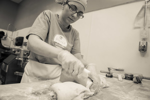
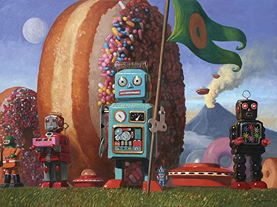

megan pidgeon A 2007 graduate of The Culinary Institute of America's Baking and Pastry Program, Megan has worked under some of the nations most recognized pastry chefs. She externed under James Beard award winner Richard Leech at Park Avenue Cafè and spent two years in the Napa Valley working under James Beard award winner Nicole Plue. Megan is a 2016 winner of star chefs rising star award.
jonathan pidgeon A 2007 graduate of The Culinary Institute of America's culinary arts program, Jonathan has spent time on the competition BBQ circuit, as a high volume off premise caterer, and was the executive chef of Blackfin Bistro in Key West, prior to opening Glazed Donuts.

ch.2
glazed beginnings
Opened on Easter Sunday of 2012 in Key West, FL, Glazed Donuts is the southernmost donut shop in The Continental United States. Serving the most beautiful and creative donuts in all of key west, maybe even florida. At Glazed Donuts we believe that eating should be one of the highlights of your day – every day – and no matter what you choose to eat, it should be made with thought, and care, which is how we work at Glazed Donuts.

ch.3
the new glazed
Sometime in 2019, Jonathan and Megan Pidgeon decided to settle down and pass on the glazed name. In early 2020, they sold Glazed to a family in hope that this family could help build their dream even further. Dave and Cynthia Langley along with their sister Oliva Leyva, took over to run this famous shop. Dave has taken upon himself to advertise and push the Red Buoy name, even going as far as to spend his off days grinding and upselling the many different blends for massive orders all over the island, and beyond. But Red Buoy isn't the biggest sell Glazed is marketing, it's the donuts. Olivia Leyva, a marvel in the kitchen, with decades of bakery experience and an apptitude for making immaculate cake doughnuts. She took to the role as if she was meant for it. At this point the only one who can make the famous doughnuts better than her is Megan Pidgeon herself.